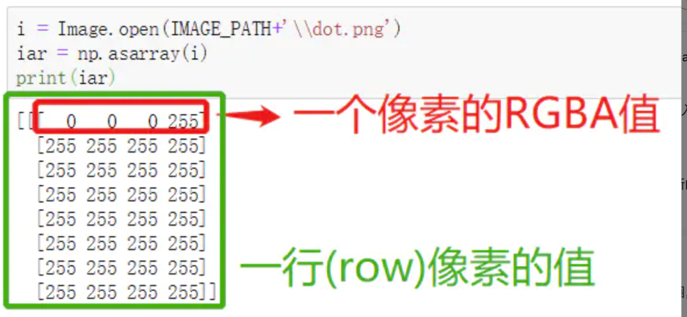
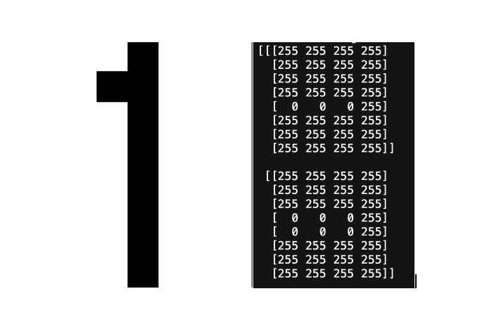
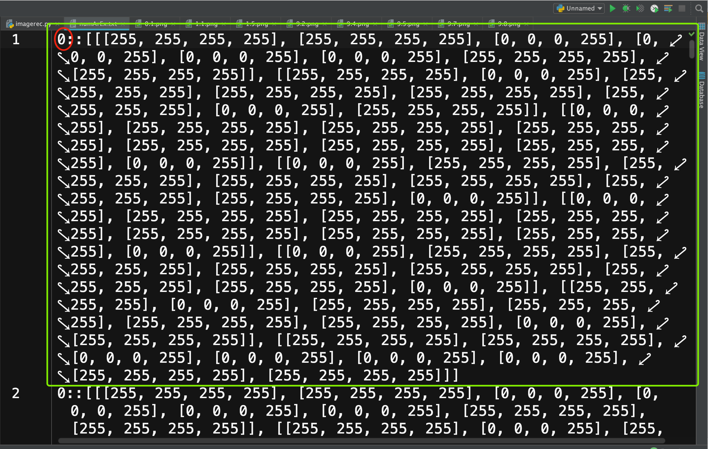
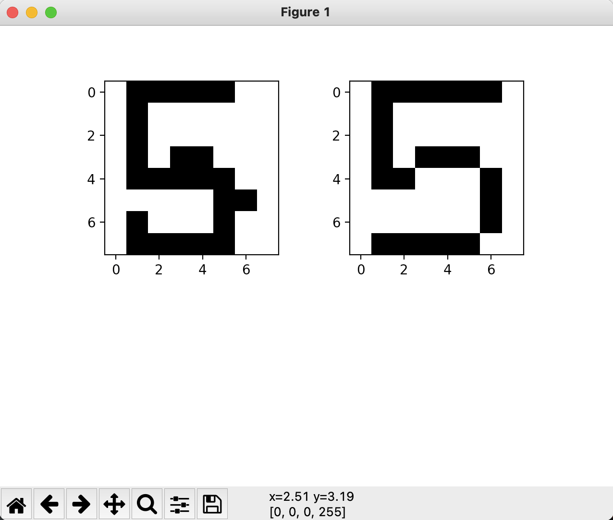
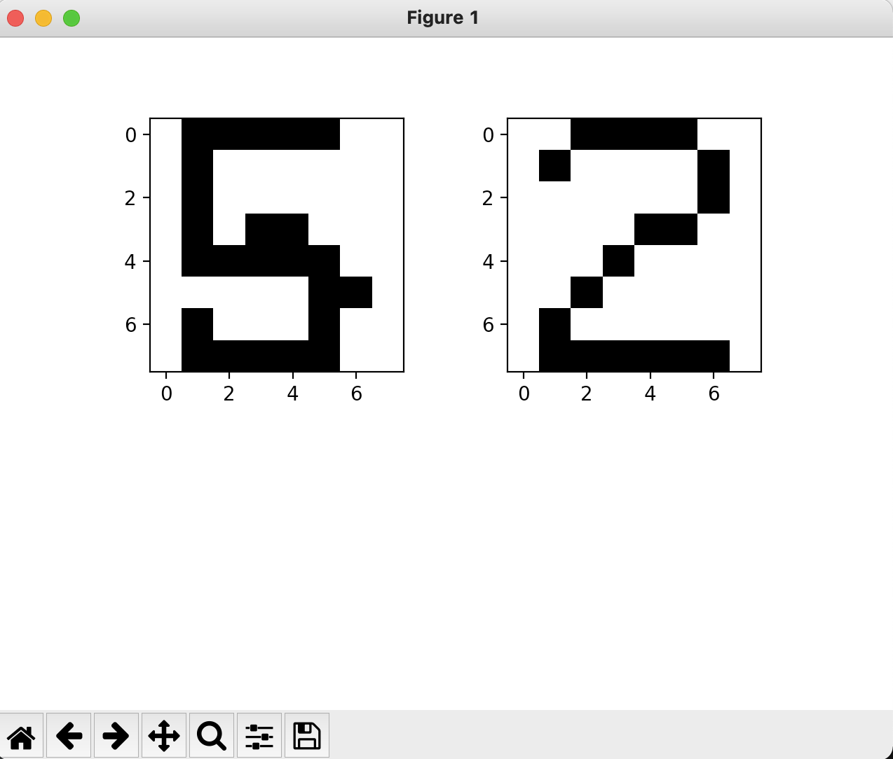
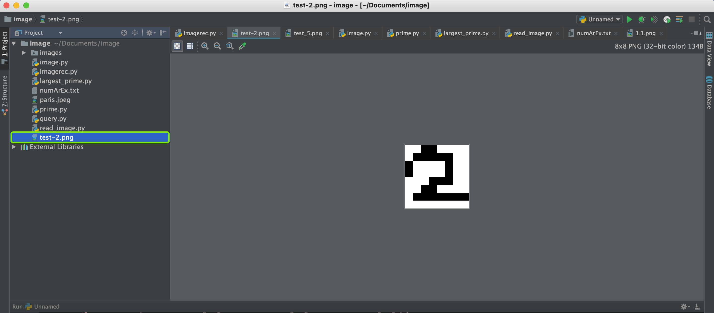

图像识别实验（下）
这次实验课的任务是识别手写的数字。
1.图像编码
通过前面几节课的学习，我们知道一幅图像是由像素点矩阵组成的。每一个像素点由红、绿、蓝以及Alpha通道组成。Alpha通道表示像素的透明度，255表示完全不透明，0表示完全透明。
例如，PNG图像是一种典型的4通道图像。
{kind=link}
这是一个表示图像的三位数组，按照行（row），列（column），像素通道来排列。绿色部分表示第一行的8个像素值，红色部分表示第一行第一列的像素值。
下图是数字1的图像，以及它图像矩阵的前两行。可以看出来数字1是从第一行的第几个像素点开始写的么？如果你能回答出来，那么说明你已经理解了图像编码的方式。
{kind=link}
如果你现在在8x8的图像上，手写一个数码1，怎么让计算机可以识别出这个数码呢？简单来说，我们需要训练计算机，让它可以找到数码1这幅图像的模式（Pattern)，再将这种模式应用到新的图像上。找到图像模式的方式有很多，甚至是学术界和工业界的研究热点，我们这堂课上，我们通过对像素点的值进行匹配。
2. 处理训练图像
我们为0-9十个数字分别准备了10张手写图像，这些图像构成了程序的学习资料。我们第一步是将每一副图像都转化为像素矩阵（数据），并且给矩阵贴上一个标签（tag）。标签表示该矩阵对应的数字。
def createExamples():
numberArrayExample = open('numArEx.txt', 'a') #append
numbersWeHave = range(0,10)
versionsWeHave = range(1,10)
for eachNum in numbersWeHave:
for eachVer in versionsWeHave:
#print(str(eachNum) + '.' + str(eachVer))
imgFilePath = 'images/numbers/' + str(eachNum) + '.' + str(eachVer) + '.png'
print(imgFilePath)
ei = Image.open(imgFilePath) #通过路径加载对应图像
eiar = np.array(ei) #将图像转化为像素矩阵
eiar1 = str(eiar.tolist()) #将像素矩阵转换为字符串，这便于我们后续对图像进行比较
lineToWrite = str(eachNum)+'::'+eiar1+'\n' #将图像矩阵转变为一行，格式是标签::图像像素数据
numberArrayExample.write(lineToWrite) #将这一行写到numArEx.txt这个文件中
你可以打开numArEx.txt这个文件，应该共有90行，每一行代表一张图片的像素信息。
{kind=link}
绿色部分表示第一张图片的信息，红色部分是训练数据的标签，也就是对应的数码。
Note
由于createExamples()函数是用来生成训练图片的像素数据的，所以**只需要执行一次**。如果执行多次，则会重复扩充numArEx.txt，没有意义。所以该函数执行一次后，可以将调用函数的代码注释掉（前面加上#）。
3. 图像识别
图像识别的算法有很多种，业界常用的算法包括SVM(support vector machine)、卷积神经网络（CNN)等。本次实验我们采用一种相对简单的算法来识别数字。关于SVM和CNN的介绍，可以参考本节最下方的链接，感兴趣的同学可以自己尝试。
本次实验课采用的基本原理是：将手写数字（预测图片）与所有的训练图片（放在images文件夹）的每一个像素点进行比较。
{kind=link}
例如，上图左边是预测图片（嗯就是我写的），右边是训练图片中的5.1.png。不难发现，左边和右边图片的像素重合度是很高的。更具体一点说，在64个像素点中，同一个位置上像素点的值相同的概率会比较大。也就是说64个像素点中，像素点值相同的个数会比较多。
再举个反例，我们直观上能感受到，预测图片（左图）和训练图片（右图）的像素重合度会比较低。
这样我们就可以设计一个图像识别算法：将预测图片与每一张训练图片做像素级的比较。像素重合度越高，预测图片与训练图片越相似。这样通过训练图片的标签就可以预测预测图片对应的数码。
{kind=link}
我们来实际操作一下。
4. 设计算法
设计函数whatNumIsThis()来预测图片。大家可以看代码注释来理解函数原理：
def whatNumIsThis(filePath):
matchedAr = []
loadExamps = open('numArEx.txt', 'r').read() #加载'numArEx.txt'文件
loadExamps = loadExamps.split('\n') #将文件每行分开，并作为元素存入loadExamps数组中
i = Image.open(filePath) #加载预测图片
iar = np.array(i) #将图片转换为数组
print(iar)
iarl = iar.tolist()
inQuestion = str(iarl) #以上两行将像素数组转化为一行字符串，例如[[1,2], [3,4]] -> "1,2,3,4"
for eachExample in loadExamps: #遍历训练图片
if len(eachExample) > 3:
splitEx = eachExample.split("::") #将每一个图片用::分割开，并放入splitEx数组中。
currentNum = splitEx[0] #训练图片标签
currentAr = splitEx[1] #训练图片像素数据
eachPixEx = currentAr.split('],') #将训练图片的像素数据再分割成一个个单独的像素，存入eachPixEx数组中
eachPixInQ = inQuestion.split('],') #将预测图片的像素数据再分割成一个个单独的像素，存入eachPixInQ数组中
x = 0
while x < len(eachPixEx): #比较训练图片与预测图片的每一个像素点
if eachPixEx[x] == eachPixInQ[x]:
matchedAr.append(int(currentNum)) #如果像素点的值相等，在matchedAr数组中添加训练图片的标签值（想想为什么？）
x+=1
x = Counter(matchedAr) #统计标签数量
print(x)
为了可以用Counter()函数来统计结果，我们需要导入Counter模块：
from collections import Counter
5. 测试算法
在blank.png中手写一个数码（需要占满图片并且在中间）。将图片保存在项目文件夹下。
{kind=link}
再调用whatNumIsThis()函数即可。
例如当我调用该函数预测下图时，会显示如下结果：
whatNumIsThis('test_6.png')
{kind=link}
{kind=link}
第一个数字对应的是训练图片的标签，第二个数字表示预测图片与该标签的10张训练图片比较，像素点值相同的数量。
结果显示，预测图片与90张训练图片进行比较，其中与标签为6的训练图片有435个像素点的值是相同的，说明预测图片与标签为6的图片相似度最大，也就说明预测图片很有可能是手写数字6。
（想一想，第二个数字理论的最大值是多少？）
6. 作业
数码识别实验要求：Digit Recognition